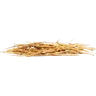

Plant Grimoire

StrawStraw is the hollow stalk left after a grain crop is threshed, most often oat, wheat, barley, or rye. It carries no seed, and its name comes from the Old English strew, meaning to spread about. In magick it brings beauty into the world through woven objects: dollies, amulets, Brigid's crosses, scarecrows, and costumes. It works for protection and for the rebirth of beauty, and it belongs to transitory moments when you are remaking yourself or reaching for ingenuity.
Of Note
Straw is a general term covering the dried stalks of several grain crops: oat (Avena sativa), barley (Hordeum vulgare), wheat (Triticum sp.), and rye (Secale cereale). Oatstraw is sometimes harvested before the plant goes to seed, specifically for herbal medicine, and its therapeutic profile is treated on the  Oats page.
Oats page.
Characteristics
Straw is not hay. Hay is denser and is cut as livestock feed for grazing animals like cows and horses. Straw is the by-product left behind after the grain has been harvested for food. The stalks are hollow, which is why the same word names the drinking tube. Far from waste, straw is woven and plaited into costumes, rugs, baskets, hats, ornaments, amulets, and mats. In the garden it is spread as mulch to hold weeds down and keep moisture in. It stuffs beds and scarecrows, and bales of it have built whole houses.
Magickal Uses
Beauty work: Weave or plait straw into ornaments, dollies, and amulets that carry beauty into the home.
Protection: A Saint Brigid's Cross woven from straw hangs in the rafters as protection from fire and lightning. Scarecrows draw on the same logic on a larger scale.
Fairy protection for an infant: Light a wisp of straw on a Friday and circle it around a baby's head to guard the child from fairies.
Re-creation and ingenuity: Use straw in transitional rituals when you are remaking yourself or when a working calls for creative thinking and the ability to turn very little into a great deal.
The Wrenboys
In the town of Dingle, on the southwest coast of Ireland, the Wrenboys are still seen each year. A Wrenboy wears a cloak of long straw lengths hung among colored ribbons, with a tall pointed hood of straw and twigs gathered at the bottom so the head appears featureless, no eyes, no mouth. On Wren Day, also called Saint Stephen's Day, Wrenboys go house to house singing, mock-fighting, and play-acting for entertainment, and in Dingle there is a parade.
The day was once a wren hunt. The wren was sacred to the Druids and was said to carry messages between this world and the world of the dead. The Christian retelling claims the bird betrayed Saint Stephen, but the older reading is simpler: a creature once revered by pagans was demonized in the conversion era. The hunt is gone. The symbology, and the straw suits, remain.
Straw into Gold
In fairy tales, straw is the raw material of transformation. Common, dry, given up for waste, it becomes thread of gold. One folk tale follows a single straw, a single coal, and a single bean who escape an old woman's cooking fire and run away together. Another tells of a fairy child who plays haunting music on an ordinary straw. The most famous turning of nothing into something is the spinning of straw into gold.
The Miller's Daughter and the Little Man
A poor miller, eager to impress the king as the royal hunt passed his mill pond, boasted that his beautiful daughter could spin straw into gold. The king brought her to the castle, locked her in a room full of straw with a spinning wheel and a reel, and warned her that if the straw was not gold by morning she would be killed.
The miller's daughter wept. A curious little man stepped into the room and offered to spin for her in exchange for a gift. She gave him her gold necklace, a tiny heart on a chain. By daybreak the reels were full of gold thread and the little man was gone. The greedy king moved her to a larger room with more straw. The little man came again, and this time she paid him with her silver ring. The king moved her to a still larger room and promised her marriage if she succeeded and death if she failed.
This time the maiden had nothing left to give. The little man bargained for her first-born child. Doubting she would ever be queen, she agreed. He spun the room to gold, the king married her in the morning, and a year later she bore a beautiful baby.
When the little man came to claim the child, the queen wept and offered him every treasure of the kingdom. He refused. Out of grudging pity he gave her three days to guess his name. She tried every name she knew. She sent messengers to neighboring cities, then to neighboring kingdoms, asking for the names of every person, every plant, and every animal. On the third evening, a messenger reported a little house in the mountains where a curious man danced around a fire and sang:
Today I feast, tomorrow I drink,
For nobody can ever think,
I'll be no more; I'll be no less.
For nobody can ever guess
My name is Rumpelstiltskin!
The next morning the queen let him guess at a few wrong names first to enjoy his glee. Then she named him Rumpelstiltskin. He screamed that the devil had told her, stamped one foot into the ground, then the other, and tore himself in two.
The lesson the straw keeps: anything dry and dismissed can be spun into something of immense value, but always with a bargain attached, and the saving word is the right name spoken at the right hour.
⚠️ Ergot and the Witch Craze
Ergot (Claviceps purpurea) is a fungus that grows on rye and other grain crops. When eaten, it can cause hallucinations, intense burning pain in the fingers, toes, and other extremities, muscle spasms, convulsions, and vomiting. Historians link accidental ergot poisoning to the Witch Craze that began in 1500s Europe, the wave of persecution that killed thousands of people in the name of purging the world of witches. During a period when conversion to the Catholic Church was intensifying, the symptoms of ergot poisoning were read as bewitchment. Sufferers and witnesses, primed by sermons and confessions, reported flying women cavorting with goblins, beasts, and the Devil. The straw and the grain it came from were the quiet center of one of the deadliest moral panics in European history.
Meaning When Gifted
When a broken straw is gifted it carries the meaning of a broken agreement.